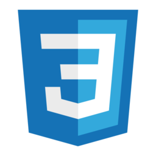

À propos de moi...
La plupart de mes compétences je les ai developper en auto didacte c'est-a-dire par moi même, sur internet grâce à des sites comme Openclassroms. J'ai la capacité de concevoir des sites internet avec l'utilisation de certains logiciels. Je suis passionné par les nouvelles technologies, les ordinateurs, la téléphonie et par le monde informatique en général car il s'agit d'un secteur où les métiers et les techniques sont multiples, complémentaires et en constante évolution. Par mes premières expériences, ma curiosité et mes recherches, je possède déjà beaucoup de connaissances en matière de systèmes d'exploitation, ordinateurs portables, hardware... En conséquence, je souhaite maintenant me professionnaliser rapidement dans ce domaine afin d'en faire mon métier, afin de capitaliser les connaissances théoriques acquises et les compléter par des compétences pratiques.
Logiciels IDE

- 

Mon Expérience
STAGE IT HELPDESK
- Onboarding et outboarding d'utilisateur
- Administration d'organisation Office 365
- le maintien en Condition Opérationnelle du parc informatique (postes de travail, serveurs, routeur, support de sauvegarde)
- le support aux utilisateurs
- le maintien, supervision et sécurisation des sauvegardes
- mise en place et utilisation d'un outil de gestion de parc informatique
- la configuration et le support du matériel à intégrer au réseau (PC, Switch, routeur; imprimantes...
- Définition des projets d'extension, de modification du réseau
- la mise en place et contrôle des procédures de sécurité et de sauvegarde
- la supervision des serveurs et des réseaux.
Mes Études
BAC S
2020-2021Entry 3 English/Maths/IT
2020-20211°er année BTS SIO
2021-2022